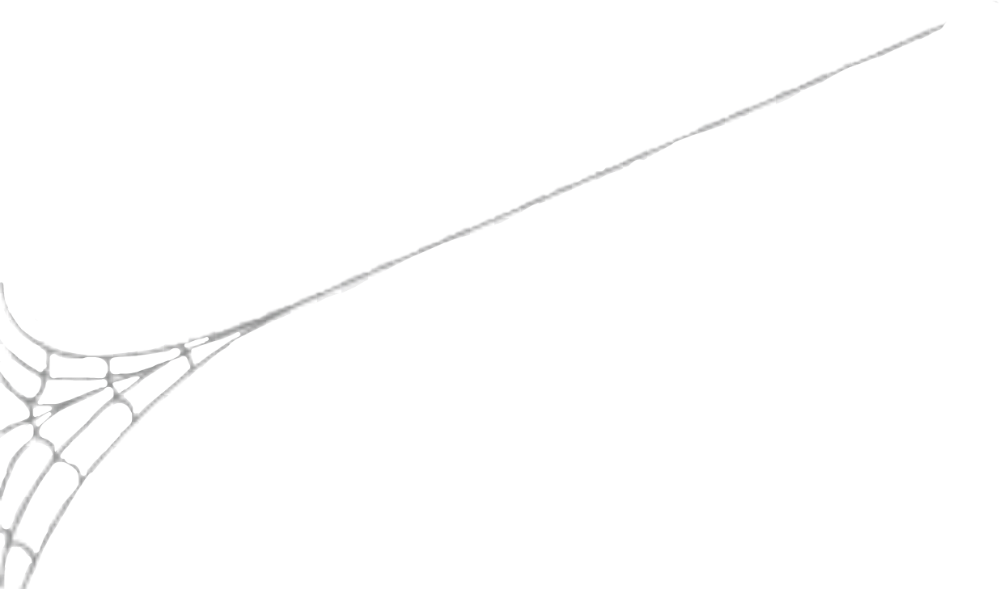
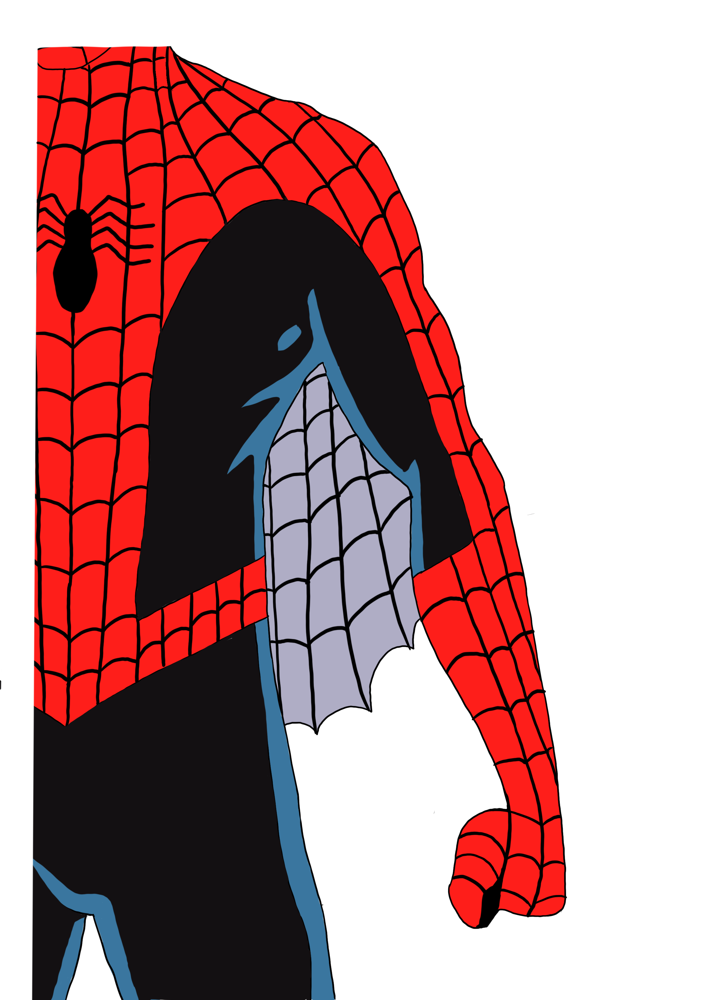

-

Spider-man: Tobey Macguire

De eerste spider-man films gespeeld door Tobey Maguire laat het proces zien in hoe het pak werd gemaakt. Peter Parker was In deze film reeks nog geen scientist en nog geen vrienden met Tony Stark. Hierdoor was het een simpel pak zonder enige high tech extra’s. Het pak bestond alleen uit een elastische stof met een cool design. Het pak scheurt dan ook in alle drie de films een keer. Ook kwam de web shooter uit de pols van Peter Parker en was hierdoor niks speciaals aan het pak toegevoegd voor deze skill. Verder waren de web lijnen op het pak erg aanwezig in deze film reeks en werd dit bij de volgende pakken steeds wat subtieler.
-
Spider-man: Andrew Garfield

In the amazing spider-man 1 en 2 gespeeld door Andrew Garfield is Peter Parker een beginnende wetenschapper. De webshooter komt niet meer uit zijn pols zelf en doordat hij een handige wetenschapper is, maakt hij een technische pols band waaruit hij webben kan schieten. Doordat hij de webben ook zelf maakt komt het voor het eerst voor dat de webben op kunnen raken en hij zonder webshooter komt te zitten. Naast de technische veranderingen zie je aan het design kleine veranderen. De web lijnen op het pak zijn minder aanwezig en de blauwe kleur is wat lichter.
-
Spider-man: Tom Holland
De derde en laatste Peter Parker wordt gespeeld door Tom Holland. In deze film reeks vormt Peter Parker een team met Iron Man waardoor Tony Stark (iron man) het pak van Peter Parker ontwerpt en maakt. Hierdoor bevat het nieuwe pak allemaal high tech features. Wat het nieuwe pak allemaal bevat zijn: beweegbare oog vlakken voor gezicht uitdrukkingen, webshooters met verschillende technische functies en uitbreidingen, web vleugels waardoor hij kan zweven/vliegen en een AI systeem met hologram waar hij mee kan praten.